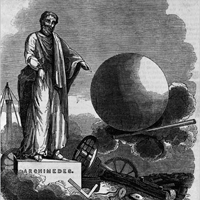

Чи зміг би Архімед підняти Землю?

«Дайте мені точку опори, і я підніму Землю!» - такий вигук легенда приписує Архімеду, геніальному механіку давнини, який відкрив закон важеля.
«Одного разу Архімед, - читаємо ми в Плутарха, - написав сіракузькому царю Герону, якому він був родич і товариш, що довільною силою можна підняти будь – який вантаж. Захоплений силою доведення, він додав, що якби була б інша Земля, він, перейшов би на неї, і зрушив би з місця нашу». Архімед знав, що немає такого вантажу, якого не можна було б підняти найменшою силою, якщо використати важіль: досить лише прикласти цю силу до дуже довгого плеча важеля, а коротким плечем подіяти на вантаж. Тому він вважав, що, натискаючи на надзвичайно довге плече важеля, можна силою рук підняти і вантаж, маса якого дорівнює масі Землі. Але, якби великий механік древності знав, яка величезна маса Землі, він, напевно, не висловив би свого гордого вигуку.
Уявімо, що Архімеду дана та «друга Земля», та точка опори, яку він шукав, уявімо, що він виготував важіль потрібної довжини. То для того, щоб підняти Землю на 1 см, йому потрібно було б тридцять тисяч мільйонів років (3·1010років). Справді, маса Землі 6·1024кг,якщо людина безпосередньо може підняти лише 60 кг, то щоб «підняти Землю», йому потрібно прикласти силу рук до довгого плеча важеля, яке більше за коротке в 1023разів ( 6?1024/60 =1032)! Тоді, поки короткий кінець важеля підніметься на 1 см ( 0 ,01 м), то довгий пройде шлях 1021м ( 0 , 01м·1023=1021).Такий шлях повинна була пройти рука Архімеда, щоб « підняти Землю» на 1 см.
Скільки ж часу потрібно для цього?
Якщо вважати, що Архімед здатен підняти 60 кг на 1 см за 1 с, то для того підняття Землі на 1 см потрібно 1021с ( 1с·102= 1021с). Ніякі пристосування геніального винахідника не допомогли б йому зменшити цей час. « Золоте правило» механіки говорить, що виграш у силі призводить до втрати у часі . Навіть якби Архімед переміщував руку з найбільш можливою у природі швидкістю ( 3·108м/c ) , то й при цьому він « підняв би Землю» на 1 см лише за десять мільйонів років ( 106).